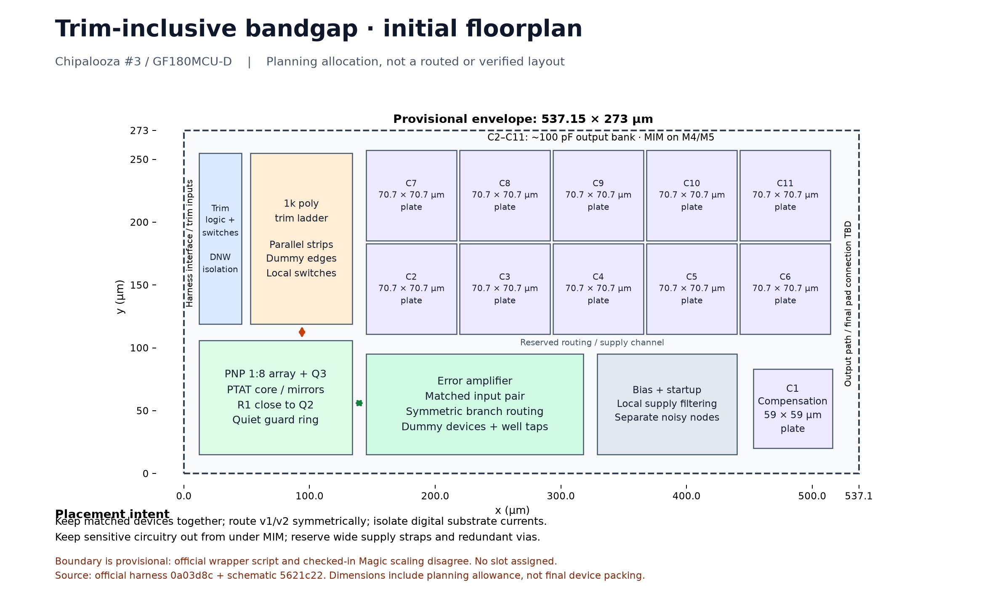
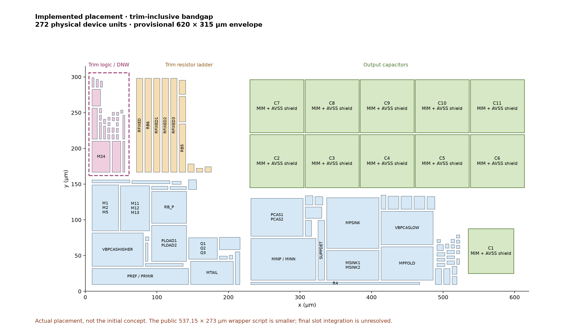
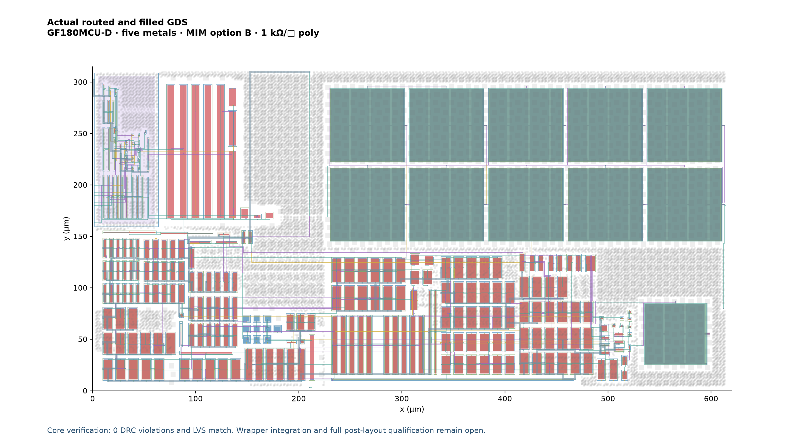
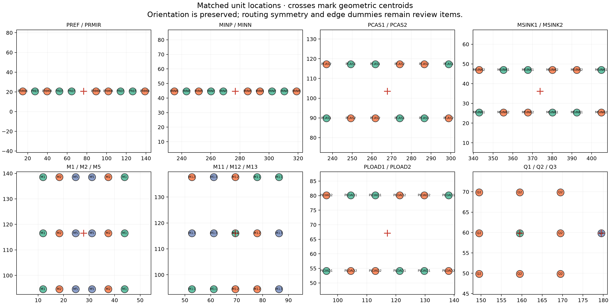
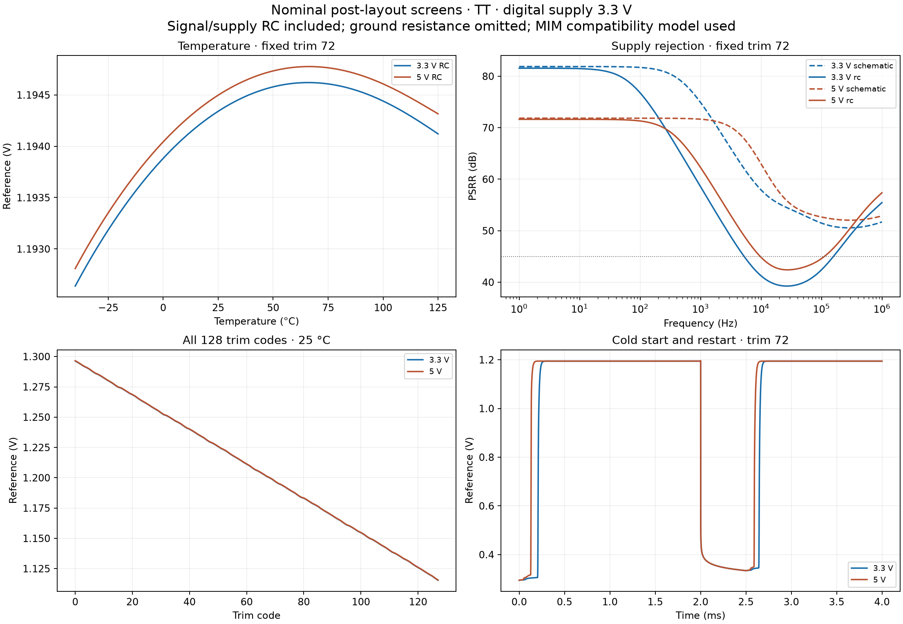
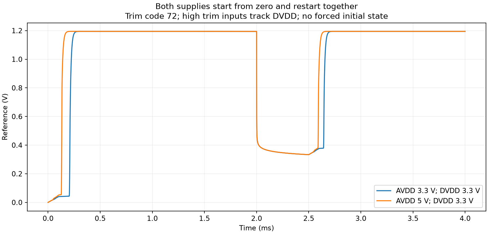
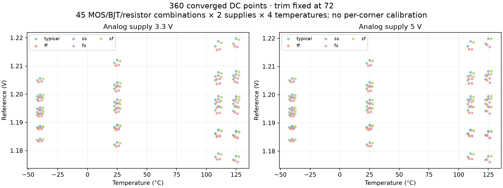

Full trim-inclusive core: routed, DRC-clean, LVS-matched
This is a review candidate, not a tapeout-qualified Chipalooza submission.
The complete core has 272 physical device units and passes the pinned, unedited KLayout rule decks.
Final wrapper integration, complete ground RC extraction, matching refinements, and analog qualification remain unfinished.
The layout implements Bandgap_Core_Res, the DUT in the last testbench, including the seven-bit trim ladder,
switches, logic, startup circuits, amplifier, bias network, bipolar devices, and all eleven MIM capacitors.
It is an IP core intended for the harness padframe.
Challenge #3 specifies 3.3 V digital and 5 V analog resources, digital controls and shared analog buses. It requires
reproducible sources, DRC/LVS evidence, post-layout PVT qualification, and designer wiring inside an assigned wrapper.
Dedicated pad use requires organizer approval. Official #3 rules.
Challenge #2 uses IHP SG13CMOS5L with 1.2 V digital and 3.3 V analog resources. Its wrapper-based integration and
open-source verification requirements are useful precedents; its process layers and electrical limits cannot be reused for GF180.
Official #2 rules and
official #2 harness.
No nonpublic instructions or slot assignment were provided. At harness revision
0a03d8c04a2f73650205b0d86decc1cdccf4b283, the public slot configuration is unassigned.
The wrapper generator specifies 537.15 × 273 µm; the checked-in wrapper opens at approximately
619.785 × 315 µm with this pinned Magic PDK because of its saved scale. The current core bounds are
(0.6, 3.0)–(614.6, 310.6) µm: 614.0 × 307.6 µm. It does not fit the smaller dimensions.
No slot, pin assignment, or final harness fit is claimed.
Wrapper generator;
representative checked-in wrapper.
The leaderboard rank is not a slot number.
Floorplan and implementation steps

Initial box diagram, prepared before implementation. The smaller envelope was a planning assumption, not a proven fit.
Audit the circuit and process. Read the final testbench hierarchy, preserve all device multiplicities,
collapse only zero-volt measurement probes, and use the requested 1k poly model. Snap three off-grid dimensions consistently
in the source schematics; rerun the ten schematic smoke profiles.
Arrange matched devices deliberately. Preserve orientation and equal geometric centroids for seven MOS matching groups.
Place Q1 centrally among eight Q2 unit PNPs; keep Q3 nearby. Use foundry PNP GDS. These choices follow the PDK's guidance on
identical units, orientation and gradient cancellation. Edge dummies and equalized interconnect remain open.
GF180 matching guidance.
Separate switching and precision regions. Put trim logic in a deep-well region with contacted substrate isolation.
Keep the resistor ladder beside its switches and leave active devices out of the MIM area. Device taps and the outer ring provide
local body/substrate contacts; this does not replace a complete latch-up and substrate-noise review.
Latch-up guidance.
Route and reinforce supplies. Route signals on M2–M4 with physical clearance checks. Add 2 µm M5 supply routes,
193 landing sites and 772 via4 cuts across AVDD/DVDD. Add grounded comb shields below the capacitors. Export all twelve core pins.
Pin assignment into the eventual harness remains provisional.
Finish manufacturing geometry. Add deterministic COMP and metal fill, keeping precision arrays and resistors clear
of metal fill. Respect MIM bottom-plate access and fill keepouts. Run the full decks, including density checks.
MIM rules,
COMP fill,
metal fill.
Verify independently and rebuild. Run schematic-to-GDS LVS, full DRC, geometry-preserving extraction preparation,
and a second LVS audit after collapsing the extracted interconnect resistors. Rebuild from the public scripts and compare all GDS
layers and labels: zero geometry differences.
Screen analog behavior. Compare schematic, extracted devices, capacitance-only, and RC models; sweep all trim codes,
temperature, PSRR, cold start and restart. Screen 45 process combinations at two supplies and four temperatures.
Record failed performance targets as failures, even when the simulator completes.

Implemented placement. It grew beyond the initial envelope; the wrapper discrepancy must be resolved before final integration.

Rendered from the delivered GDS, including fill. No illustrative geometry is substituted for the layout.

Geometric matching is implemented. Q3 is a nearby unit, not part of the Q1:Q2 centroid ratio.
The v1/v2 route totals are approximately 340.8/356.8 µm; matched routing is not yet established.
Measured verification and simulation evidence
Check
Result
Scope
Full KLayout DRC
0 violations
GF180MCU-D, unedited installed deck, all enabled checks
KLayout LVS
Matched
All 272 physical units, schematic-derived reference, 1k poly and MIM B
Extraction topology audits
Both matched
Device-only and collapsed-RC extraction compared with physical GDS
Fresh source rebuild
Geometry identical
All layers and text labels; GDS timestamps can differ
Repository checks
37 tests passed
Existing suite after schematic grid adjustments
Nominal screens use TT, digital supply 3.3 V, fixed trim 72, no added load, and the existing TB10 reference of 1.194 V.
This is separate from the README's 1.18 V planning goal and temperature-optimized calibration strategy. TC below is the
box estimate across −40 to 125 °C. Startup settling is measured after each 100 µs ramp, within 0.5% of the settled value.
In this first bench, only AVDD cycles; DVDD stays powered. The output rests near 0.3 V during its analog-off interval,
so this test must not be confused with both supplies being off.
Analog supply
VREF
IDD
Box TC
Minimum PSRR, 1 Hz–1 MHz
Cold / restart settling
3.3 V
1.194341 V
24.33 µA
10.06 ppm/°C
39.25 dB
152.7 / 93.0 µs
5 V
1.194498 V
31.66 µA
9.98 ppm/°C
42.40 dB
65.7 / 38.5 µs
PSRR does not meet the existing targets. The RC results are below the README's 45 dB planning minimum
and the testbench's 60 dB threshold. The 3.3 V box TC is also slightly above the 10 ppm/°C budget. These results are not sign-off passes.

A separate test starts and restarts both supplies from zero, with high trim inputs following DVDD.
Both cases complete with the expected settled reference. Cold settling after the ramps is
159.4 µs at 3.3 V and 76.7 µs at 5 V;
restart settling is 92.2 and 37.6 µs.
These remain nominal-corner screens, not a complete power-sequencing qualification.

The cross-corner screen completed 360 DC points: five MOS × three BJT × three resistor corners × two
supplies × four temperatures (−40, 25, 110, 125 °C). With code 72 held fixed, VREF spans 1.175909–1.219886 V and
maximum IDD is 52.29 µA. Convergence is not calibrated accuracy or full PVT qualification.

What remains before a shuttle release
Integration: obtain a consistent public wrapper/slot allocation, compact or re-floorplan if the smaller envelope applies,
and connect power, trim and output pins. Check shared-multiplexer/pad loading and unpowered behavior.
Analog refinement: improve sensitive-node routing and PSRR; add and verify appropriate edge dummies; equalize matched parasitics;
perform quantitative supply/ground IR and current-density checks.
Complete extraction: resolve Magic's false AVSS–DVSS resistor connection. The supplied RC screen explicitly omits both ground
resistances, retains signal/supply RC and coupling above 0.1 fF, and uses the project's documented MIM compatibility model.
PNP/well-resistor hierarchy restoration has zero fabricated-geometry XOR and independent topology audits.
Extractor accuracy: the pinned Magic 8.3.678 predates the sidewall-capacitance correction identified in the
KLayout-PEX documentation, which requires 8.3.679 or newer
for its Magic wrapper. The capacitance and RC results here are screening evidence and need revalidation with a corrected extractor.
Qualification: calibrated trim across PVT, corner startup/restart, stability, noise, mismatch, load response and device-voltage
limits, followed by final wrapper-level DRC/LVS. No performance target was relaxed to make this candidate pass.
Verified toolchain: Magic 8.3.678, KLayout 0.30.9, ngspice 46, Xschem 3.4.8RC.
PDK revision f6eeac7dad085ffcc829ccfd721f7b4ce39edcf7. The pinned image, source map, commands, file hashes, reports and extraction
limitations are included with the deliverable. The original pre-review build remains on design_review_1.